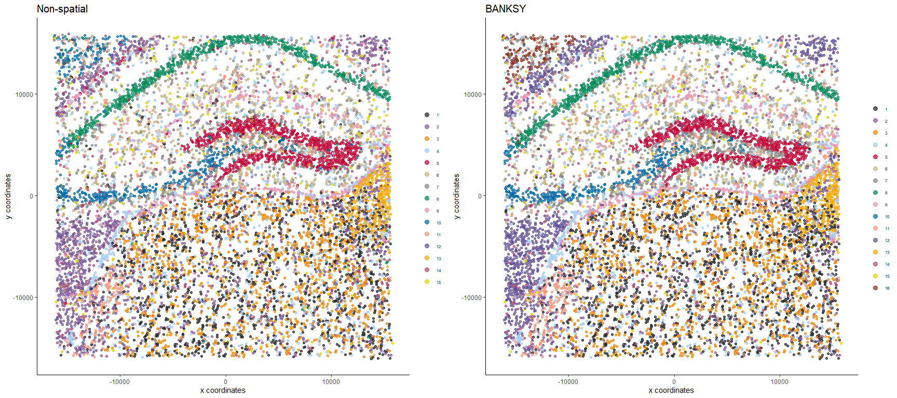
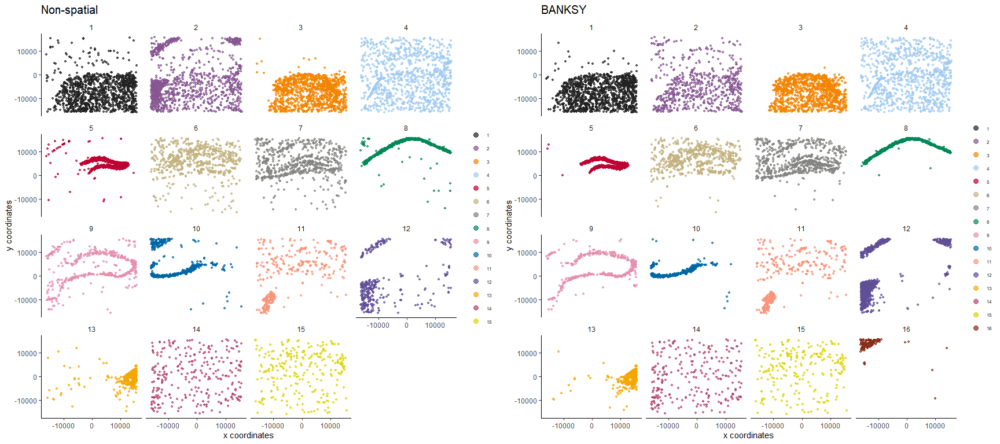

BANKSY is a method for clustering spatial transcriptomic data by augmenting the transcriptomic profile of each cell with an average of the transcriptomes of its spatial neighbors. By incorporating neighborhood information for clustering, BANKSY is able to
BANKSY is applicable to a wide array of spatial technologies (e.g. 10x Visium, Slide-seq, MERFISH) and scales well to large datasets. For more details, check out:
The Banksy package can be installed via remotes:
remotes::install_github("prabhakarlab/Banksy", dependencies = TRUE)Installation should take less than three minutes.
Known installation issues
leidenAlg has non-zero exit status
remotes::install_github("prabhakarlab/Banksy@feat-igraph-leiden")Detailed description of Banksy functionality and example analyses are available at the package webpage.
Banksy comes installed with documentation of main functions and their usage, along with several vignettes which detail different use cases:
Working with Banksy objects: Introduction to the BanksyObject class which serves as a container for Banksy.
Mouse hippocampus VeraFISH dataset: Illustrates a grid search of parameters which best cluster cells.
Human dorsolateral prefrontal cortex 10x Visium dataset: Illustrates analysis of multiple spatial transcriptomic datasets.
Mouse hypothalamus MERFISH dataset: Illustrates visualization functionality with a dataset with 3 spatial dimensions.
Interoperability with SingleCellExperiment: Illustrates BANKSY interoperability with Bioconductor SingleCellExperiment framework for interfacing with packages like scran or scater.
Figure 4 data analysis: Shows how the results shown in Fig. 4 of the paper were generated.
Banksy is also interoperable with Seurat via SeuratWrappers. Documentation on how to run BANKSY on Seurat objects can be found here.
Banksy takes as input an expression matrix and cell centroids. Example datasets are provided with the package:
The gene expression matrix for cells should be a matrix:
class(expr)
#> [1] "matrix" "array"
head(expr[,1:5])
#> cell_1276 cell_8890 cell_691 cell_396 cell_9818
#> Sparcl1 45 0 11 22 0
#> Slc1a2 17 0 6 5 0
#> Map 10 0 12 16 0
#> Sqstm1 26 0 0 2 0
#> Atp1a2 0 0 4 3 0
#> Tnc 0 0 0 0 0while cell locations should be supplied as a data.frame:
class(locs)
#> [1] "data.frame"
head(locs)
#> sdimx sdimy
#> cell_1276 -13372.899 15776.37
#> cell_8890 8941.101 15866.37
#> cell_691 -14882.899 15896.37
#> cell_396 -15492.899 15835.37
#> cell_9818 11308.101 15846.37
#> cell_11310 14894.101 15810.37We store the total counts for each cell and the number of expressed genes as metadata data.frame, which can optionally be supplied:
total_count <- colSums(expr)
num_genes <- colSums(expr > 0)
meta <- data.frame(total_count = total_count, num_genes = num_genes)Next, create a BanksyObject with the expression matrix and cell locations (metadata is optional).
bank <- BanksyObject(own.expr = expr,
cell.locs = locs,
meta.data = meta)Apply basic QC by keeping only cells with total counts within the 5th and 98th percentile:
bank <- SubsetBanksy(bank, metadata = total_count > quantile(total_count, 0.05) &
total_count < quantile(total_count, 0.98))We first normalize the expression matrix, compute the neighbor matrix, and scale the resulting matrices.
bank <- NormalizeBanksy(bank, normFactor = 100)
bank <- ComputeBanksy(bank, k_geom = 10, spatialMode = 'kNN_r')
#> Computing neighbors...
#> Computing neighbor matrix...
#> Done
bank <- ScaleBanksy(bank)Run PCA on the BANKSY matrix for lambda = 0 (no spatial information) and lambda = 0.3.
bank <- RunPCA(bank, lambda = c(0, 0.3), npcs = 30)
#> Running PCA for lambda=0
#> Running PCA for lambda=0.3Next, we obtain cluster assignments using graph-based clustering with the Leiden algorithm on the first 20 PCs. Specify the following parameters:
resolution. Leiden clustering resolution.k.neighbours. Number of k neighbours to use for constructing sNN.
set.seed(42)
bank <- ClusterBanksy(bank, lambda = c(0, 0.3), pca = TRUE, npcs = 20,
method = 'leiden', k.neighbors = 50, resolution = 1.2)
#> Iteration 1 out of 2
#> Iteration 2 out of 2Different clustering runs can be harmonised with ConnectClusters:
bank <- ConnectClusters(bank, map.to = clust.names(bank)[1])Visualise the clustering output for non-spatial clustering (lambda=0) and BANKSY clustering (lambda = 0.3).
features <- clust.names(bank)
feature.types <- rep('discrete', 2)
main <- c('Non-spatial', 'BANKSY')
plotSpatialFeatures(bank, by = features, type = feature.types, main = main,
pt.size = 1.5, main.size = 15, nrow = 1, ncol = 2)
For clarity, we can visualise each of the clusters separately with wrap = TRUE:
plotSpatialFeatures(bank, by = features, type = feature.types, main = main,
pt.size = 0.5, main.size = 15, nrow = 1, ncol = 2,
wrap = TRUE)
Session information
sessionInfo()
#> R version 4.1.2 (2021-11-01)
#> Platform: x86_64-w64-mingw32/x64 (64-bit)
#> Running under: Windows 10 x64 (build 19043)
#>
#> Matrix products: default
#>
#> locale:
#> [1] LC_COLLATE=English_Singapore.1252 LC_CTYPE=English_Singapore.1252
#> [3] LC_MONETARY=English_Singapore.1252 LC_NUMERIC=C
#> [5] LC_TIME=English_Singapore.1252
#>
#> attached base packages:
#> [1] stats graphics grDevices utils datasets methods base
#>
#> other attached packages:
#> [1] Banksy_0.1.3
#>
#> loaded via a namespace (and not attached):
#> [1] bitops_1.0-7 matrixStats_0.61.0
#> [3] doParallel_1.0.17 RColorBrewer_1.1-3
#> [5] GenomeInfoDb_1.30.1 tools_4.1.2
#> [7] utf8_1.2.2 R6_2.5.1
#> [9] irlba_2.3.5 uwot_0.1.11
#> [11] DBI_1.1.2 BiocGenerics_0.40.0
#> [13] colorspace_2.0-2 GetoptLong_1.0.5
#> [15] tidyselect_1.1.2 gridExtra_2.3
#> [17] compiler_4.1.2 cli_3.1.0
#> [19] Biobase_2.54.0 DelayedArray_0.20.0
#> [21] labeling_0.4.2 scales_1.2.0
#> [23] stringr_1.4.0 digest_0.6.29
#> [25] dbscan_1.1-10 rmarkdown_2.13
#> [27] XVector_0.34.0 dichromat_2.0-0.1
#> [29] pkgconfig_2.0.3 htmltools_0.5.2
#> [31] MatrixGenerics_1.6.0 highr_0.9
#> [33] fastmap_1.1.0 maps_3.4.0
#> [35] rlang_1.0.2 GlobalOptions_0.1.2
#> [37] pals_1.7 rstudioapi_0.13
#> [39] farver_2.1.0 shape_1.4.6
#> [41] generics_0.1.2 mclust_5.4.9
#> [43] dplyr_1.0.7 RCurl_1.98-1.6
#> [45] magrittr_2.0.1 GenomeInfoDbData_1.2.7
#> [47] Matrix_1.3-4 Rcpp_1.0.7
#> [49] munsell_0.5.0 S4Vectors_0.32.3
#> [51] fansi_0.5.0 lifecycle_1.0.1
#> [53] stringi_1.7.6 leidenAlg_1.0.2
#> [55] yaml_2.2.1 ggalluvial_0.12.3
#> [57] SummarizedExperiment_1.24.0 zlibbioc_1.40.0
#> [59] plyr_1.8.6 grid_4.1.2
#> [61] parallel_4.1.2 crayon_1.5.1
#> [63] lattice_0.20-45 sccore_1.0.1
#> [65] mapproj_1.2.8 circlize_0.4.15
#> [67] knitr_1.37 ComplexHeatmap_2.10.0
#> [69] pillar_1.7.0 igraph_1.2.11
#> [71] GenomicRanges_1.46.1 rjson_0.2.21
#> [73] codetools_0.2-18 stats4_4.1.2
#> [75] glue_1.6.0 evaluate_0.15
#> [77] data.table_1.14.2 png_0.1-7
#> [79] vctrs_0.3.8 foreach_1.5.2
#> [81] gtable_0.3.0 grr_0.9.5
#> [83] purrr_0.3.4 clue_0.3-60
#> [85] assertthat_0.2.1 ggplot2_3.3.6
#> [87] xfun_0.29 tibble_3.1.6
#> [89] RcppHungarian_0.2 iterators_1.0.14
#> [91] Matrix.utils_0.9.8 IRanges_2.28.0
#> [93] cluster_2.1.2 ellipsis_0.3.2Bug reports, questions, request for enhancements or other contributions can be raised at the issue page.